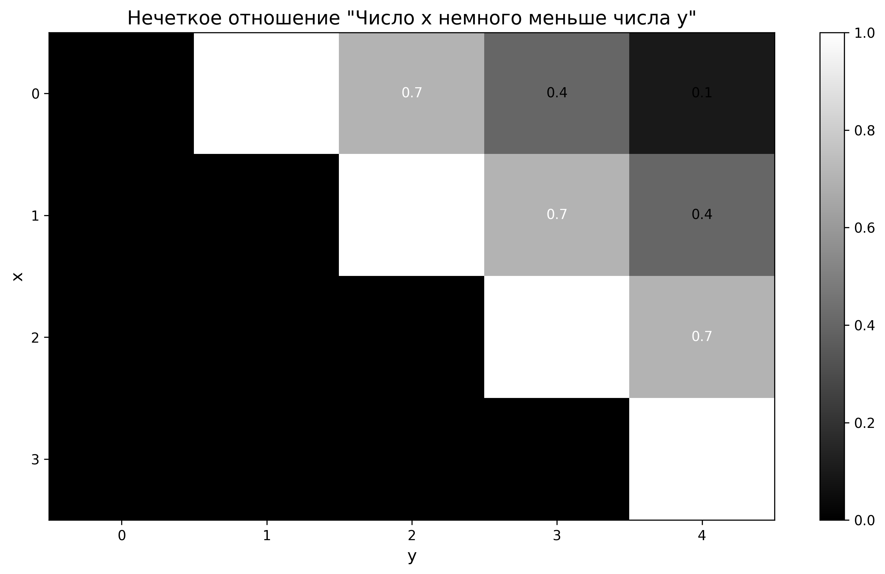
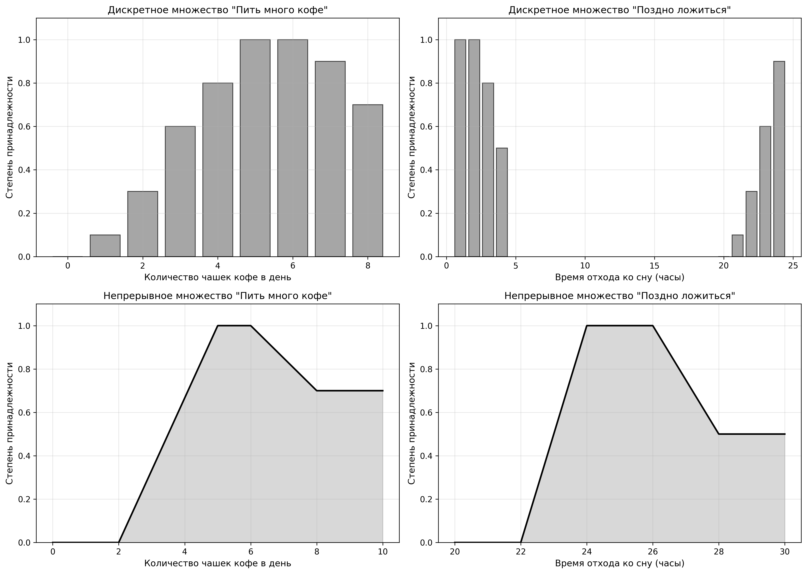
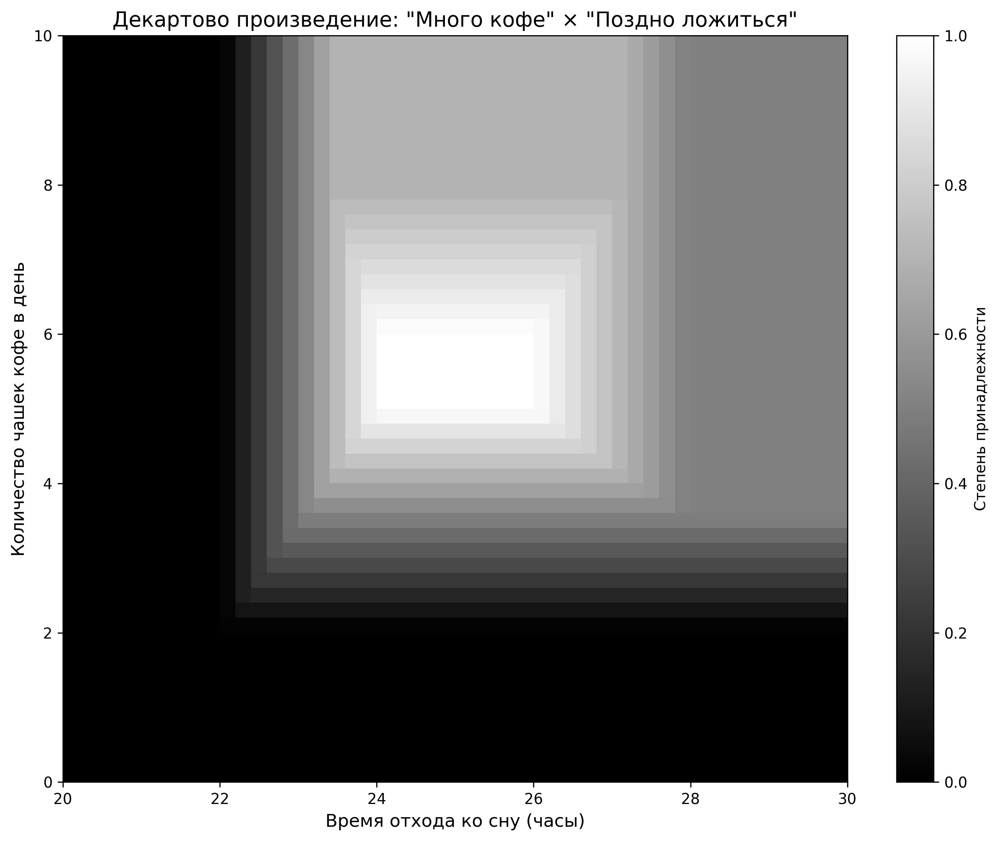
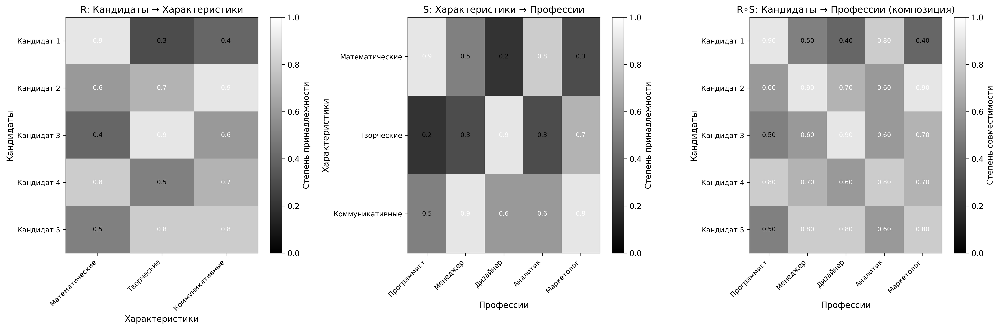

Изучение понятий нечетких отношений, операций над ними и их применения для решения практических задач.
Пусть $\widetilde{A}_1$, $\widetilde{A}_2$, ..., $\widetilde{A}_n$ - нечеткие подмножества универсальных множеств $X_1, X_2, \ldots, X_n$ соответственно. Прямое (декартово) произведение $\widetilde{A} = \widetilde{A}_1 \times \widetilde{A}_2 \times \ldots \times \widetilde{A}_n$ является нечетким подмножеством множества $X = X_1 \times X_2 \times \ldots \times X_n$ с функцией принадлежности:
Классическим n-арным отношением R, заданным на области определения $X = X_1 \times \ldots \times X_n$, называется упорядоченное множество кортежей из n элементов, имеющее вид:
где $\mu_R \left(x_1, x_2, \dots, x_n\right)$ представляет собой функцию принадлежности отношения R.
Задача: Задать на декартовом множестве $\{0, 1, 2, 3\} \times \{0, 1, 2, 3, 4\}$ отношение: «Число x немного меньше числа y».
Решение:
Нечеткое отношение "Число x немного меньше числа y" задается функцией принадлежности $\mu_R(x, y)$, которая определяет степень, с которой пара $(x, y)$ принадлежит данному отношению.
Для отношения "x немного меньше y" функция принадлежности определяется следующим образом:
Матрица нечеткого отношения представлена в таблице 1:
| R | y = 0 | y = 1 | y = 2 | y = 3 | y = 4 |
|---|---|---|---|---|---|
| x = 0 | 0.0 | 1.0 | 0.7 | 0.4 | 0.1 |
| x = 1 | 0.0 | 0.0 | 1.0 | 0.7 | 0.4 |
| x = 2 | 0.0 | 0.0 | 0.0 | 1.0 | 0.7 |
| x = 3 | 0.0 | 0.0 | 0.0 | 0.0 | 1.0 |
Графическое представление отношения показано на рисунке 1:
Анализ результатов:
Из матрицы видно, что максимальные значения функции принадлежности (равные 1.0) находятся на позициях, где разность между y и x равна 1, что соответствует интуитивному пониманию "немного меньше". При увеличении разности степень принадлежности уменьшается, что отражает уменьшение степени соответствия понятию "немного меньше".
Задача: Найти отношения двух нечетких множеств: "Пить много кофе в день (чашек)" И "поздно ложиться" в случае задания их в дискретном виде и непрерывном.
Решение:
Зададим нечеткие множества в дискретном виде:
Множество "Пить много кофе" (чашек в день):
$\widetilde{A} = \{0/0.0, 1/0.1, 2/0.3, 3/0.6, 4/0.8, 5/1.0, 6/1.0, 7/0.9, 8/0.7\}$
Множество "Поздно ложиться" (часы):
$\widetilde{B} = \{20/0.0, 21/0.1, 22/0.3, 23/0.6, 24/0.9, 1/1.0, 2/1.0, 3/0.8, 4/0.5\}$
Графики дискретных множеств представлены на рисунке 2:
Зададим нечеткие множества в непрерывном виде с помощью функций принадлежности:
Функция принадлежности "Пить много кофе" (чашек в день):
Функция принадлежности "Поздно ложиться" (часы, где 22 = 22:00):
Декартово произведение $\widetilde{A} \times \widetilde{B}$ задается функцией принадлежности:
где $x$ - количество чашек кофе в день, $y$ - время отхода ко сну.
Визуализация декартова произведения представлена на рисунке 3:
Анализ результатов:
Декартово произведение показывает области, где одновременно выполняются оба условия: человек пьет много кофе И поздно ложится. Максимальные значения функции принадлежности (близкие к 1.0) находятся в области, где количество чашек кофе составляет 5-6 чашек, а время отхода ко сну - после полуночи до 2 часов ночи.
Задача: Задача о консалтинге в области выбора профессии.
Постановка задачи:
Имеется множество кандидатов и множество профессий. Требуется определить степень совместимости каждого кандидата с каждой профессией на основе их характеристик и требований профессий.
Решение:
Множество кандидатов: Кандидат 1, Кандидат 2, Кандидат 3, Кандидат 4, Кандидат 5
Множество профессий: Программист, Менеджер, Дизайнер, Аналитик, Маркетолог
Каждый кандидат характеризуется тремя параметрами:
Характеристики кандидатов представлены в таблице 2:
| Кандидат | Математические способности | Творческие способности | Коммуникативные способности |
|---|---|---|---|
| Кандидат 1 | 0.9 | 0.3 | 0.4 |
| Кандидат 2 | 0.6 | 0.7 | 0.9 |
| Кандидат 3 | 0.4 | 0.9 | 0.6 |
| Кандидат 4 | 0.8 | 0.5 | 0.7 |
| Кандидат 5 | 0.5 | 0.8 | 0.8 |
Каждая профессия имеет требования к характеристикам кандидата. Требования представлены в таблице 3:
| Профессия | Математические способности | Творческие способности | Коммуникативные способности |
|---|---|---|---|
| Программист | 0.9 | 0.2 | 0.5 |
| Менеджер | 0.5 | 0.3 | 0.9 |
| Дизайнер | 0.2 | 0.9 | 0.6 |
| Аналитик | 0.8 | 0.3 | 0.6 |
| Маркетолог | 0.3 | 0.7 | 0.9 |
Для решения задачи используем композицию нечетких отношений. Определим два отношения:
Отношение R: Кандидаты → Характеристики (способности кандидатов)
Отношение S: Характеристики → Профессии (требования профессий)
Композиция отношений R∘S дает отношение Кандидаты → Профессии и вычисляется по формуле MAX-MIN композиции:
где $c$ - кандидат, $p$ - профессия, $k$ - характеристика (математические, творческие или коммуникативные способности).
Это означает, что для каждой пары (кандидат, профессия) мы находим максимум по всем характеристикам от минимума способности кандидата и требования профессии по этой характеристике.
Матрица R (Кандидаты → Характеристики):
| Кандидат \ Характеристика | Математические | Творческие | Коммуникативные |
|---|---|---|---|
| Кандидат 1 | 0.9 | 0.3 | 0.4 |
| Кандидат 2 | 0.6 | 0.7 | 0.9 |
| Кандидат 3 | 0.4 | 0.9 | 0.6 |
| Кандидат 4 | 0.8 | 0.5 | 0.7 |
| Кандидат 5 | 0.5 | 0.8 | 0.8 |
Матрица S (Характеристики → Профессии):
| Характеристика \ Профессия | Программист | Менеджер | Дизайнер | Аналитик | Маркетолог |
|---|---|---|---|---|---|
| Математические | 0.9 | 0.5 | 0.2 | 0.8 | 0.3 |
| Творческие | 0.2 | 0.3 | 0.9 | 0.3 | 0.7 |
| Коммуникативные | 0.5 | 0.9 | 0.6 | 0.6 | 0.9 |
Матрица совместимости кандидатов с профессиями (результат композиции R∘S) представлена в таблице 6:
| Кандидат \ Профессия | Программист | Менеджер | Дизайнер | Аналитик | Маркетолог |
|---|---|---|---|---|---|
| Кандидат 1 | 0.9 | 0.5 | 0.4 | 0.8 | 0.4 |
| Кандидат 2 | 0.6 | 0.9 | 0.7 | 0.6 | 0.9 |
| Кандидат 3 | 0.4 | 0.6 | 0.9 | 0.4 | 0.7 |
| Кандидат 4 | 0.8 | 0.7 | 0.6 | 0.8 | 0.7 |
| Кандидат 5 | 0.5 | 0.8 | 0.8 | 0.5 | 0.8 |
Пример вычисления: Для Кандидата 1 и Программиста:
Визуализация всех трех матриц представлена на рисунке 4:
На основе матрицы совместимости можно сделать следующие рекомендации:
| Кандидат | Рекомендуемая профессия | Степень совместимости |
|---|---|---|
| Кандидат 1 | Программист | 0.9 |
| Кандидат 2 | Менеджер / Маркетолог | 0.9 |
| Кандидат 3 | Дизайнер | 0.9 |
| Кандидат 4 | Программист / Аналитик | 0.8 |
| Кандидат 5 | Менеджер / Дизайнер / Маркетолог | 0.8 |
Анализ результатов:
Выводы:
Использование композиции нечетких отношений (MAX-MIN композиция) позволяет количественно оценить совместимость кандидатов с различными профессиями на основе их характеристик. Метод учитывает не только наличие определенных способностей, но и степень их выраженности. Композиция отношений R∘S эффективно объединяет информацию о способностях кандидатов и требованиях профессий, что делает рекомендации более точными и обоснованными.
В ходе выполнения лабораторной работы были изучены следующие понятия и методы:
Практическое применение нечетких отношений показало их эффективность для моделирования нечетких связей между объектами и принятия решений в условиях неопределенности.